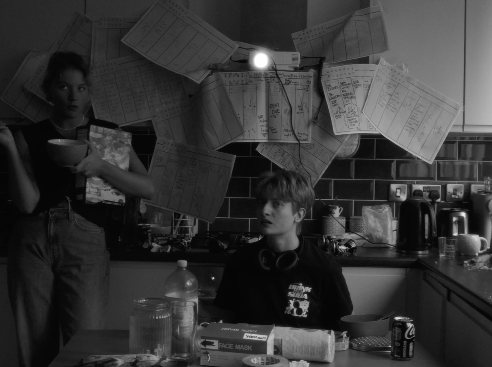

For this one I'd recommend watching the film and then reading up on it. There's no password.My grad film from the infamous Met Film School London (don't go there), Clean Your Room! is loosely based on my experiences around ADHD medication, but this is the inspiration of the story rather than its message.
I knew making a film about cleaning a room had practical potential for a first film. It would only need one location, limited amounts of actors, and the idea was original enough to go somewhere. It is up to the viewer whether the act of cleaning the room should be taken literally or as a metaphor for a need to be organised. To me it's a bit of both.
The script was originally written as a horror short, somewhat similar to works by Ari Aster or Andrej Zulawski, with only one character, and I think this can be seen in the darker aspects of the film. I decided to turn it into a silent comedy after watching the Heart of the World, by (forgot his name).
There's stuff to say about the other influences, which started with 1920s soviet cinema but soon integrated elements from more mainstream western directors. It would feel a bit pretentious to name drop them though so I'm not sure I want to got there. A lot of them aren't conscious anyway.
What I can say is how we built the robot suit. My awesome production designer, Matthieu Levy (link to his website) should really get all the credit for this. All I did was send him a few influences and he did the rest. We sourced materials in a bunch of hardware shops in London, then stuck. the tin foil on a white builder's sute. The helmet was a basic cycle helmet, which we put all these materials on.
We were filming during a heatwave, so my evil director story is that poor Seisha had to boil inside it for the art. With the cinematographer, Nikki, we deccided to film up close to hide the more DIY aspects of the robot and make it more intimidating. The fog really helped as well.
As for the message of the film, you can make up your own mind. Now that I'm writing about it I realise how this film has a special place in my heart. I definitely see it as the start of the themes that obsess me and that I'd push in a more abstract way in Someone: image, relationship between humans and technology, meta-reflection on the power of film. All that jazz ;)
Director: Ernest Nabialek
Starring: Seisha Butler, Pilar Malo, Natalia Udintsova, Francesca Lia
Director of Photography: Nikki Ng
Production Designer: Matthieu Levy
Music: Jacob E. Dufton